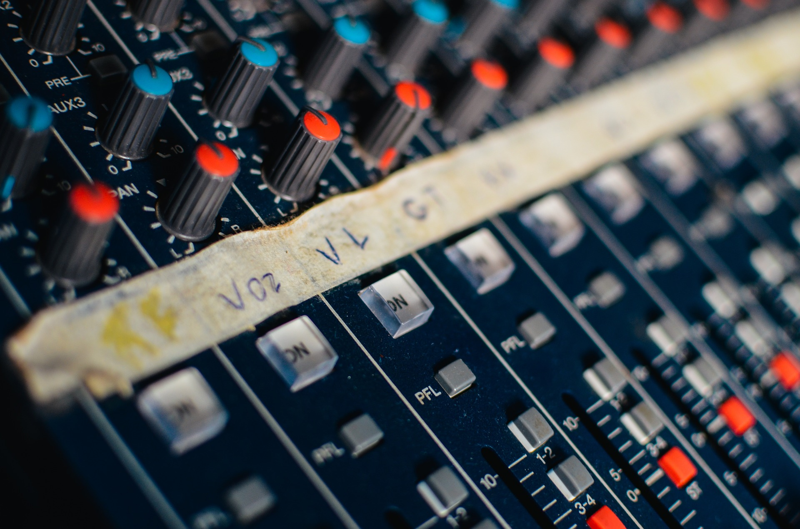

Work
Media Production
Media tech has always been my forte. Much of my experience comes from 8+ years of audio engineering, however, I also have a few years of experience with cameras, video editing in applications such as Final Cut, and video switching / technical directing.
Graphics/Photos
Working with graphics can be a ton of fun. Graphic design is useful nearly anywhere in life, and who doesn't want to know how to use Photoshop or Illustrator? I've also done some small scale photography too, as professional photos will always been needed when working with graphics.
Web Projects & Design

Web design is a relatively new interest of mine. After a couple of classes involving HTML and CSS, I've grown to enjoy developing websites for various purposes, including my personal website that you're currently viewing.